Because turning ideas into code could be tricky !
Many ways have been tried by people,
Some of them lead to disaster,
Others to a consensus about how to avoid disaster.
Some Software Development Good Practices
Sélection du jour
We turn human ideas into computer code
Why A Talk About Good Practices ?

They’re the good practices
It’s preferable to know some of them
Regardless of your experience :)
Mainly Because Of Our Human Limitations
Remember Human Brain
First processor to turn human ideas into computer code
Good Points
It detects patterns, similarities,
It learns, extrapolates and generalizes quickly.
Not So Good Points
Short-memory buffer,
Reinterprets everything we say to it,
⇒ Cognitive and cultural.

Good practices discussed ?
There’s too much to say.
We will focus about in attitude and design about
To successfully translate human ideas into computer code
To handle complexity,
To not be afraid to break everything
For coding part, see https://marcdexet-cnrs.github.io/devworkshop5_tips_for_maintainability
Chapter 1
Attitude
Attitude - Part 1
Be Kind To Our Brain
Do Not Overload Mental Mapping
Brain is not good
at following complex branching or keeping arbitrary references.

Keep things as simple and direct as possible
to do not get lost.
Give Regularity And Consistency
Brain learns from patterns if they’re visible.
Attitude - Part 2
Don’t Get Lost In Translation
Don’t Get Lost In Translation

Traduttore, traditore
Translator, traitor
The further away from the code is the idea,
the greater is the risk of the distortion.
Don’t Get Lost In Translation
Try to ever answer to these questions :
"How I came to write this piece of code ?"
"How I connect it to my original idea ?"
"What I’m writing indeed ?"
You could be surprised by your answers…
Attitude - Part 3
Freeze
The Brownian Motion
Of Ideas
The Brownian Motion Of Ideas
When translating
ideas into code,
there’s many moving and unfixed ideas
spinning in our heads.
Many of them are just useless…
You will eliminate them
just by speaking them out.
"It sounds simple,
but in explaining the problem
to another person
you must explicitly state things
that you may take for granted
when going through the code yourself.
...
...
By having to verbalize some of these assumptions,
you may suddenly gain new insight into the problem."
"The Pragmatic Programmer"
Speak Out What Is Spinning In Your Head

Don’t keep problems to yourself
Verbalize your insights
to somebody,
to an object, your computer, your pencil
to a Rubber Duck → https://en.wikipedia.org/wiki/Rubber_duck_debugging

Dessinez, c’est gagné
Draw it, and it’s fine
Formalism doesn’t matter
Sketch by hand
Unified Language Method (UML)
Support does not matter
Paper or blackboard, or Any click-and-connect online tool ( draw.io)
Draw shapes and arrows
Connect things,
Make flow visual,
Assign place to components
Share and discuss !
Attitude - Part 4
Don’t Be Afraid To Act
Don’t Be Afraid To Act
The fear of breaking something literally blocks our brain.

This fear reflects our inability to anticipate everything
in a complex context.
So we have to deal with it and find ways to limit it.
Don’t Be Afraid …
To go too far and be unable to go back,
To miss side effects,
To break a fragile building.
Don’t Be Afraid …
To go too far and be unable to go back → Use GIT
To miss side effects,
To break a fragile building.
Use git
Save each significant step, even significant small steps.
So nothing will be never lost!
Don’t Be Afraid To Try
You could try something in a parallel universe,
with branching,
without spoiling the work done,
and merge if it’s better.
Don’t Be Afraid To Try
... or abandon if it’s worse.
Don’t Be Afraid To Lost
Nothing is never lost.
Don’t Be Afraid …
To go too far and be unable to go back → Use GIT
To miss side effects → Use automated tests,
To break a fragile building → Get a good design.
Attitude Sum Up
Be Kind To Our Brain
Don’t Get Lost In Translation
Freeze The Brownian Motion Of Ideas
Don’t Be Afraid To Act
Chapter 2
Design
Design - Part 1
Dealing With Complexity
Complexity, Complication
Complex vs Complicated ?
Complex as opposed to simple ⇒ indirect,
Complicated as opposed to easy ⇒ difficult.
If complexity is not a problem, complication should be avoided.
Complexity, Complication And Abstraction
The more abstract and high-level are ideas,
the more complex is implementation.
(the less direct to implement)
Complexity, Complication And Abstraction
The more complex is implementation,
the more complicated MAY BE the code.
(the less easy to understand)
How To Deal With Complexity
Reduce the number of elements to take into account
Distinguish different levels of abstraction
Take things in order
Isolate and decouple elements
Flexibility
Stability
Focus
Along this journey, we’ll see some well known principles as SOLID.
Dealing With Complexity
Reduce The Number Of Elements To Take Into Account
Reduce The Number Of Elements To Take Into Account
If there’s a few elements, it doesn’t really matter.
But with some more…
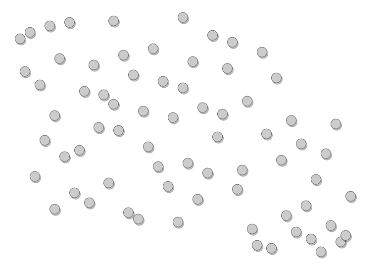
Imagine each element could be linked to a concern…
Concern ?
A concern is a subject of interest, a goal
For a restaurant
Kitchen
Cooking
Orders
Payments
Stock
Service
…
For a car
Engine
Fuel
GearBox
Frame
..
Group them by concern
Group them by concern
Group them by concern
This is,
roughly speaking,
the principle of
Separation of Concern.
You didn’t magically remove all the complexity.
But, you have reduced cognitively the number of elements …
... per level of abstraction
Separation of concern
Grouping element by concern could be a question of point of view.
Choose concerns such as
They have limited intersection,
but intersection will occur.
They are consistent and focused,
Cooking and Astronomy is not very consistent !
In programming world:
Module
Package
Namespace
Classe
Dealing With Complexity
Separate Levels Of Abstraction
Separate Levels Of Abstraction
Let us take two areas of concern.
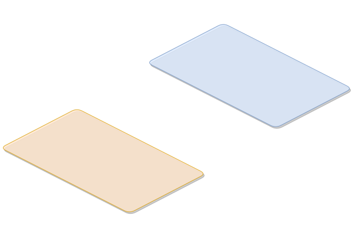
Separate Levels Of Abstraction

Several layers of abstraction,
from the general concepts
to the specialized components.
Separate Levels Of Abstraction
Several elements
per level of abstraction.
Separate Levels Of Abstraction
They could be grouped by sub-concern.
Separate Levels Of Abstraction
They interact inside a concern, from level to another one, between concerns.
Separate Levels Of Abstraction
But one of the best way of doing
is to interact
through the top levels…
Separate Levels Of Abstraction
... Such as black boxes
whose contents
can be more freely modified.
It provides more isolation.
Let’s make a movie

Let’s open a parenthesis
to illustrate the last design principles with
the movie industry.
You want to shoot a video
You are on holiday,
you see a pleasant seaside scene.
You want to shoot a video with your smartphone.
What do you do ?
Take smartphone,
Shoot video.
Complexity
None…

You want to shoot a video
You want to send a happy birthday song video
with some friends to somebody.
What do you do ?
Prepare song with friends,
Repeat the song,
Call everyone back,
Select the room,
Shoot video,
Send the movie by email.
Complexity
A few elements, but not a big deal !

You want to shoot a video
You want to make a scientific popularization video about Euclid in your lab.
What do you do ?
Ask for the agreement of the Euclid consortium,
Prepare the script,
Get a support for expenses,
Validate script by expert,
Rent a professional camera,
Select actors,
Choose a date to shoot the movie,
Build an euclid S/C model,
Repeat,
…

You want to shoot a video
Complexity
You still far away from starting to shoot
And already a lot of concern…
Concerns
Scientific background
Camera
Actors
Sets
Accessories
..
May be it’s time to get a little bit organized
before being overwhelmed.
You want to shoot a movie
You want to shoot a real movie with actors, costumes, decorations and so on…
You want to shoot a movie
What do you do ?
TL;DR
Let’s see what the film industry is doing
A Separation of Concerns of "shooting a movie" could be
Let’s focus on "Art" concern :
- Sets
- Costumes
- Make-Up
- Hair
Each of theses sub-concerns could be broken down into.
Each of theses sub-concerns could be broken down into.
And so on…
End Of The Parenthesis
It illustrates how
complexity could increase and be handled
by breaking it down
by concerns
and
levels of abstraction
End Of The Parenthesis
Seaside scene → a few lines of code
Birthday song → a few classes or modules
Euclid video → a code for few days
Movie → a PF at Euclid ?
Where do you place your work ?
Dealing With Complexity
Take Things Into Order
Guess what is this ?
Recipe
Reheat the oven to 200ºC.
Peel 1 onion.
Place peeled onion with the mushrooms, rye bread and 1 teaspoon of ground coriander.
Put it in a food processor and whiz until fine.
Drain.
Pulse in the black beans, season lightly with sea salt and black pepper.
Divide mixture into 4 parts.
Shape parts into patties.
Rub each part all over with oil.
Dust each part with ground coriander.
Place on an oiled baking tray and roast for 25 minutes.
Put Cheddar topping.
Warm the rolls for the last few minutes.
Peel and very finely chop the remaining onion with the tomatoes and place in a bowl.
Squeeze over the lime juice.
Add a few shakes of Tabasco and season to taste.
…
What’s this ?
This is HOW to get something
But do you get exactly WHAT is done ?
No, you lost sight of the ideas behind.
You got lost in the translation.
I have seen some code not so far way from this recipe…
This is a recipe to cook roasted black bean burgers.

Separate
WHAT you want
from
HOW you get it.
A WHAT defines the goal
It identifies a block of instruction, the HOW.
This HOW block is composed of identified goals.
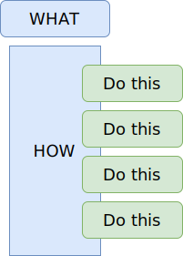
Separate WHAT you want from HOW you get it
Often you start getting how to make thing
But quickly, you could
be trapped by the details of implementation,
battle with your tool,
…
And sometimes you still haven’t defined exactly what you really want.
Define
WHAT you want
before
HOW to get it.
Even, and especially in the coding phases !
Illustration with a burger…
Define the goal
Think about the process (recipe)
Get all the major steps without be drowned by details.
But you have to go beyond to get your burger.
To get from the idea to the solution.
You get the idea of WHAT you want, in a very abstract way

You think about HOW to get, in a little less abstract way
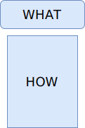
but no so far away.
The HOW is flow of control of instructions
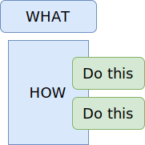
Each instruction is, itself, a goal to reach
... a WHAT at a less abstract level.
And so on…
And so on…
And so on…
...Until you find solution into the provided development ecosystem.
As language, librairies, other projects…
The "WHAT then HOW" chaining.
Going from higher level to lower level.
Coding is turning human ideas into code.
Refactoring is turning code into human ideas
Learn To Delegate problems
... to a future you
Learn To Delegate To A Future You
Don’t try to fix everything NOW
Identify WHAT you want and postpone the resolution of the HOW to later
class ApplePieRecipe(Recipe):
def make_an_apple_pie(self, nb_person: int) -> ApplePie :
passclass ApplePieRecipe(Recipe):
def make_an_apple_pie(self, nb_person: int) -> ApplePie :
self.collect_ingredients(nb_person)collect_ingredients doesn’t exist.
I created collect_ingredients, …
class ApplePieRecipe(Recipe):
def make_an_apple_pie(self, nb_person: int) -> ApplePie :
self.collect_ingredients(nb_person)
def collect_ingredients(self, nb_person: int):
# Thank you future me to code this
pass..., but I don’t know HOW it will work and I don’t care… now.
And so on …
class ApplePieRecipe(Recipe):
def make_an_apple_pie(self, nb_person: int) -> ApplePie :
self.collect_ingredients(nb_person)
self.collect_kitchen_ustensils()
self.prepare_mixture()
self.prepare_the_cake_dough()
self.set_the_mixture_in_cake_dough()
self.put_to_oven()
def collect_ingredients(self, nb_person: int):
# Thank you future me to code this
pass
def collect_kitchen_ustensils(self):
# Thank you future me to code this
pass
def prepare_mixture(self):
# Thank you future me to code this
pass
def prepare_the_cake_dough(self):
# Thank you future me to code this
passBy delegating to a future you,
you quickly define what you really need
without getting trapped into implementation details
from the beginning.
Have confidence in your future you.
Dealing With Complexity
Think Components
A processing (function, method) takes inputs and return ouputs.
It could composed of sub-processings
Each of them using results of preceding.
If we want to look at a part,
as it is delimitated,
we can isolate it and focus…
Modify it…
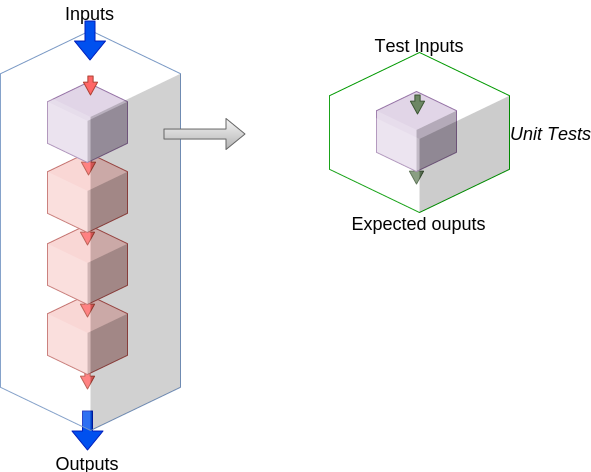
And put it under test.
We can test it independantly
of others.
If we are interested to another part of this processing…
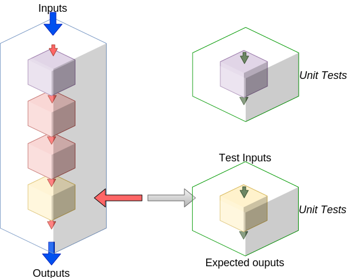
Modify it, put under test it and only it.
independantly of other ones.
What if the main processing is not broken down into small parts ?
To test a portion, …
... we have to put the WHOLE processing under test.

And to test another portion, we have to put
the WHOLE processing under test again!
And if test fails,
which part is incorrect ?
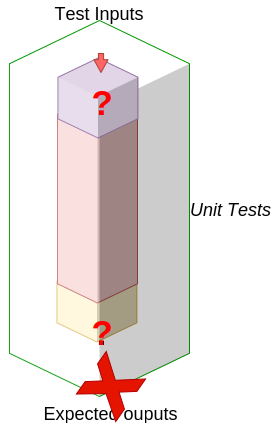
Test can not tell, as it tests the WHOLE processing.
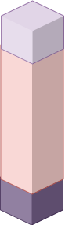
And as portions are not isolated from each other…
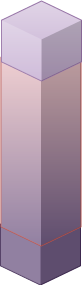
Modification of an non-isolated portion of code
could have side effects on the whole block.
Good :)
Bad :(
Think of your code as
small
isolated,
reusable
components.
Very Bad
God Class-Module-Function
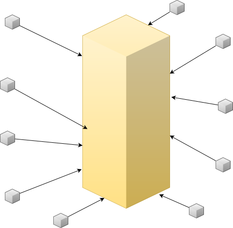
God Class-Module-Function
God Class-Module-Function
knows everything,
does everything,
influence every aspect of the software
God Class-Module-Function
God Class-Module-Function
but if it failed…
Ok, how to do ?
Going from…
Bad legacy
Ok, how to do ?
To
Good refactoring
In fact, we need to extract block as function in order to handle them.
How do we break a plain old bunch of code lines down into external functions ?
The comments my friend !
The comments…
They tell to your brain what the stack of code lines is doing.
They translate code to human world.
They often separate de facto blocks.
With a few modification, from a block you get a function easily.
Illustration with the burger recipe !
Your recipe must have comments to remember what are we doing.
From each comment, build a meaningful function name !
Move code block to a new definition named from meaningful function name you found.
Modify a little bit the code to isolate it.
(i.e no external dependencies, only parameters)
The same with the next block.
At the end you have a well defined architecture.
Sum Up
Separate the WHAT from the HOW
Think about WHAT before HOW
Follow the WHAT then HOW chaining
Think Components
Design - Part 2
Flexibility
Coupling
When any change to one component implies to modify the other one.
For a few components, it doesn’t really matter.
Coupling
But with a lot of components, it would turn into a nightmare !

So how to decouple ?
How to decouple ?
In software engineering, coupling means bound by too much knowledge.
3 strategies to limit required knowledge
Only take contract into account
Show only what’s is needed
Inversion of dependencies
A component of type A uses
a component of type B.
This is a dependency between A and B.
If B changes, A is certainly forced to adapt.

Do not bound A
to what dependency is,
but to what it offers.
A kind of contract describing only
WHAT it does.
"Browser" contract
Fetch a content on internet given a valid URL
Display content using HTML
Submit valid HTTP form to a given URL
Bookmark favorites
…
So as long as the component
respects the contract,
it could be anything.
respects the contract
⇒ implements the contract.
So as long as the component
respects the contract,
it could be modified.
We don’t care…
But if contract changes,
both of them have to change.
From the A point of view,
only B contract exists.
The contrat is a interface.
Illustration with a Camera Operator using a camera of Fony Inc.
If camera changes Camera Operator has certainly to be adapted.
As there’s a lot of camera models,
the better is to relate to a
camera contract instead of a camera model.
So as long as it
implements the required interface,
camera could change…
We don’t care.
We could make tests
of Camera Operator
without hacking a real camera.
Just use a mock Camera implementing Camera Interface.
To get flexibility,
be bound
to contract (interface),
not implementation.
Show only what’s is needed
class ReportingCamera:
def start_video(self):
...
def stop_video(self):
...
def start_sound(self):
...
def stop_sound(self):
...A TV Reporting Camera Operator
use a
Reporting Camera
described by a
Reporting Camera Interface.
It records video and sound.
Someone decided to split
Reporting Camera Operator
responsabilities
in two parts.
They use the same interface.
They use the same interface.
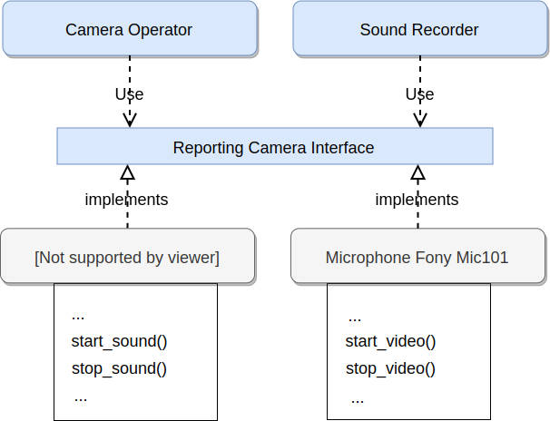
But if the camera itself is separated into two components…
We get a nonsense…
We show too much.
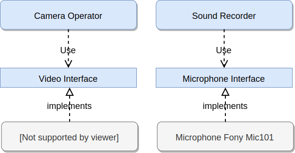
class Video(ABC):
@abstractmethod
def start_video(self):
...
@abstractmethod
def stop_video(self):
...
class Microphone(ABC):
@abstractmethod
def start_sound(self):
...
@abstractmethod
def stop_sound(self):
...We have to limit each of them
to WHAT they do
and only what they do.
No more and no less.
This way, any dependency
satisfying the interfaces
could be used.
This way, any dependency
satisfying the interfaces
could be used.
What about our Reporting Camera Operator ?
It could use the both interfaces.
Whether it’s implemented by two components…
... or implemented by only one component !
We don’t care.
What about the Reporting camera interface ?
How to reconcile the two universes ?
By making Reporting camera
be a Camera interface
and
a Microphone interface too.
class ReportingCamera(Camera,Microphone):
...By making Reporting camera
be a Camera interface
and
a Microphone interface too.
A interface with too much information
is split into very user focused interfaces.
It’s the
Segregation of Interfaces
principle.
So it
could be seen as a
video interface for video interested users.
...or a Microphone interface for sound interested users.

It allows very flexible architecture like this…
class FonyStreet(ReportingCamera):
# microphone interface
def start_sound(self):
...... or this with a delegation to the microphone for all the Microphone stuff.
class FonyStreet(ReportingCamera):
def __init__(self, connected_microphone):
self.microphone = connected_microphone
# microphone interface
def start_sound(self):
self.microphone.start_sound() # <- delegation pattern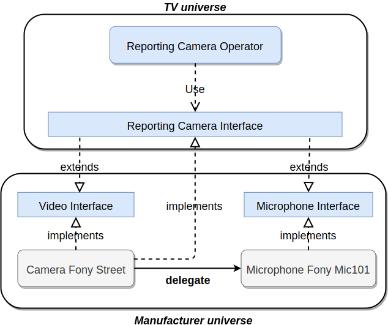
Segregation Of Interfaces allows
to join different universes
with different point of view.
Here the TV universe
and
the camera Manufacturer Universe.
Inversion of dependency
Imagine a professional Camera built upon
a base camera
with differents connectors.
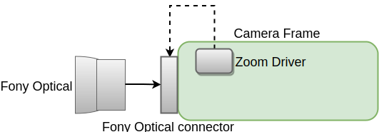
It’s possible to change optical following a specific connector linked to a zoom driver.
But we need a different connector according optical manufacturer.
Coupling alert …
Coupling alert …
In term of concern
The dependency goes
from the "high level" to the "low level".
(yes, in this exemple it’s a little bit arbitrary, let say that optical is at service of the camera)
It’s inconfortable for camera manufacturer.
Too much required knowledge.
It’s better to conceive camera with a given connector,
and let optical brands propose adapted lens.
This is the main idea of
Inversion Of Dependency
principle.
Do not bother with the details of low-level dependencies out of concern.
Propose a interface.
They will adapt.
Definition of Inversion Of Dependencies
High-level modules should not depend on low-level modules. Both should depend on abstractions (e.g. interfaces).
Abstractions should not depend on details. Details (concrete implementations) should depend on abstractions.
Inversion of dependency
If none of them are compatibles, use the Adaptator pattern.
Classical dependency orientation.

Inversion of dependency.
Use of Adaptator pattern.

Note that with ad hoc Adaptator pattern, there’s absolutly no coupling between the two universes.
They can evolve independently, as long as Adaptator follows the evolutions.
Design - Part 3
Stability
Open Closed
Imagine a professional Camera
It is built upon
a base camera
with differents connectors
for optical,
battery,
visor…
So you can create several configurations.
One with a more powerful battery…
One with a different optical system…
One with a deported monitoring device…
Or a waterproof model
with deported commands.
But you can not modify the command sytem…
Nor modify the optical connector location…
Without modifiying Base Camera.
And of course it’s forbidden, only Manufacturer could do this.
The camera is
Open for extension
and
Closed for modification.
This is a illustration of the
Open/Closed principle.
Imagine a camera for the general public,
with all included inside the frame.
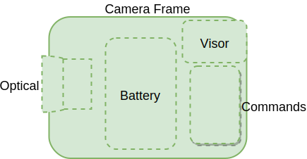
There’s no way to extend it…
Impossible to change the battery …
Neither the optical system…
Nor the visor.
Nor could be extended either as waterproof camera with deported commands.
This camera doesn’t respect the open/closed principle.
Open closed.
The Open/Closed principle ensure that a component could be extended safely without being modified.
It’s very useful when the component
is shared over several projects,
is well tested and validated,
is sealed and modification is impossible.
Liskov Substitution Principle
Imagine our professional camera again.
There’s a range of optical of type A that could use the "ultra-stabilization" engine of the camera.
A premium product extends the first one
with more capabilities, and
higher price.

It still uses the "ultra-stabilization" engine.
It still is "a type A optical".
It could be substitued to the first one.
A cheap version is created, but this one can not use the "ultra-stabilization" engine.
Althouh this last optical is branded as
"a type A optical",
it can not be substitued to the parent type
because it breaks the "ultra-stabilization" engine feature.
It’s not good :(
Check you provide subtypes ("type A minus")
that could be substitued
to the parent type ("type A")
without breaking something.
This is, roughly,
the
Liskov Substitution Principle.
If S is a subtype of T,
then objects of type T may be replaced
with objects of type S without side effects.
Design - Part 4
Focus
Single Responsability
Imagine our professional camera again.
It is composed of following components.
Designers have to modify the video component to fix a driver bug.
As there’s only one concerned by the video concern, it’s the only one component needing to be modified.
Video is composed of Optic and Driver components at next sub-level.
As it’s a video’s driver bug, at the sub-level, there’s only the Driver component to be modified.
This is an illustration of
Single Responsability
principle.
Component should have a single responsibility and thus only a single reason to change.
Let’s see a violation of this principle.
There’s two bugs to correct of different concerns.
It appends there’s two reasons to modify a component, with all the potential problems.
Single Responsability conclusion
A REFAIRE Limit required knowledge of external by keeping focused on what a component has to do.
Sump Up Of Seen Principles
I have tried to make you feel through graphiques the following principles.
Separation of Concern
Differentiation of Levels Of Abstraction
Only take into account contract
Segregation of Interfaces
Inversion of Dependencies
Open/Closed principle
Liskov Substitution principle
Single Responsability principle
Sump Up Of Seen Principles
Among them, I hope someone have recognized
SOLID
Single Responsability principle
Open/Closed principle
Liskov Substitution principle
Segregation of Interfaces
Inversion of Dependencies
Some Opening
Explore the topics of the development principles in more depth
Explore Designs Patterns
Read good books
Conclusion
There’s too much to say, I regret to not have asked for 2h to maurice, sorry.
Some thoughts on unit tests
Objectives
In this presentation
Some unit testing methods
Examples in Python
Pros
Cons
Not in this presentation
Examples in C++
Theory behind the scene
object-oriented programming
coupling
behavior-driven development…
Higher level testing
system-level intergation
validation
profiling…
Overview
Standalone unit tests
Methodwise tests — the naive, rigid approach
Fixtures — the basic tool
Fluent tests — the tip that changes everything
Integrated unit tests
Coupled tests — the naive, rigid approach
Doubles: Stub tests — the most straightforward way
Doubles: Mock tests — for complex cases and BDD
Standalone unit testing
First unit tests are the ones using only one, standalone class.
There is no dependency to any other class to be tested.
In this module, we propose to implement and test a simple vector.
Vector requirements
The length of a vector is the number of elements it contains.
A vector can be converted to a Boolean value: The empty vector is false, others are true.
Elements of the vector are naturally indexed; The first index is 0.
The vector raises an exception if an elements with negative or too large index is requested.
Two vectors of same length add element-wise.
Two vectors of different lengths don’t add.
Vector implementations
class Vector(ABC):
@abstractmethod
def __init__(self, data):
pass
@abstractmethod
def __len__(self):
pass
def __bool__(self):
return len(self) > 0
@abstractmethod
def __getitem__(self, index):
pass
@abstractmethod
def __add__(self, other):
passclass ListVector(Vector):
def __init__(self, data):
self._data = list(data)
def __len__(self):
return len(self._data)
def __getitem__(self, index):
if index < 0:
raise IndexError
return self._data[index]
def __add__(self, other):
if len(self) != len(other):
raise NotImplementedError
res = (a + b for a, b in zip(self._data, other._data))
return ListVector(res)class NumpyVector(Vector):
def __init__(self, data):
self._data = array(data)
...Methodwise testing
Natural way of unit testing = One test per operation to be tested.
Example: Testing vector addition
Set up a vector with desired properties.
Perform the operation.
Check the output state of the vector.
class TestListVector(object):
def test_addition(self):
# Setup
a = ListVector([1, 2, 3])
b = ListVector([4, 5, 6])
# Operation
s = a + b
# Output check
assert s[0] == 5
assert s[1] == 7
assert s[2] == 9This works… in simplest cases.
Not SOLID-friendly.
Dirty.
Fixtures
When setup is more complex, it is better to outsource it from the unit test itself.
This is what we call a fixture by analogy to hardware testing.
In general, fixtures are classes which are instanciated at test setup.
Test vector addition with random values
More flexibility without duplication: Test vector addition with varying random values.
class RandomListVector(ListVector):
def __init__(self, size=None):
self.input_size = size
if size is None:
self.input_size = random.randrange(1, 10)
self.input_data = [random.random() for i in range(self.input_size)]
super().__init__(self.input_data)class TestListVector(object):
@classmethod
def setup_class(cls):
# Let's instantiate an empty vector and two random vectors of same size
cls.empty = RandomListVector(0)
cls.random_a = RandomListVector()
cls.random_b = RandomListVector(len(cls.random_a))
def test_addition(self):
s = self.random_a + self.random_b
for s_i, a_i, b_i in zip(s, self.random_a, self.random_b):
assert s_i == a_i + b_iThis works… but we are coupling things at setup which are not coherent.
Why creating an empty vector along with a random vector or two while they do not interact in the tests?
Fixtures for plain English tests
We could go one step furter by simply grouping tests by setup.
That’s exactly what you would do for hardware.
Grouped requirements
An empty vector
's length is zero
is false
plus another empty vector is an empty vector
A random vector
's length is the number of elements
is true
is naturally indexed starting from 0
raises an error if index is negative
raises an error if index is too large
Two random vectors of same size
add element-wise
Two random vectors of different sizes
don’t add
Fluent implementation
class TestAnEmptyVector(object):
@classmethod
def setup_class(cls):
cls.vector = ListVector([])
def test_length_is_zero(self):
assert len(self.vector) == 0
def test_is_false(self):
assert not self.vector
def test_plus_another_empty_vector_is_an_empty_vector(self):
assert not self.vector + self.vectorclass TestARandomVector(object):
@classmethod
def setup_class(cls):
cls.vector = RandomListVector()
def test_length_is_the_number_of_elements(self):
assert len(self.vector) == self.vector.input_size
def test_is_true(self):
assert self.vector
def test_is_naturally_indexed_starting_from_0(self):
for i in range(len(self.vector)):
assert self.vector[i] == self.vector.input_data[i]
def test_raises_an_error_if_index_is_negative(self):
with py.test.raises(Exception):
self.vector[-1]
def test_raises_an_error_if_index_is_too_large(self):
with py.test.raises(Exception):
self.vector[len(self.vector)]class TestTwoRandomVectorsOfSameSize(object):
@classmethod
def setup_class(cls):
cls.random_a = RandomListVector()
cls.random_b = RandomListVector(len(cls.random_a))
def test_add_element_wise(self):
s = self.random_a + self.random_b
for s_i, a_i, b_i in zip(s, self.random_a, self.random_b):
assert s_i == a_i + b_i
class TestTwoRandomVectorsOfDifferentSizes(object):
@classmethod
def setup_class(cls):
cls.random_a = RandomListVector()
cls.random_b = RandomListVector(len(cls.random_a) + 1)
def test_dont_add(self):
with py.test.raises(Exception):
self.random_a + self.random_b"Unit" responsibility principle
It is now obvious that we are testing:
one property: being correctly indexed
of one entity: the vector
in one situation: an empty vector, a random vector, two random vectors
That’s unit testing!
Go back to the first two approaches and you’ll see how mingled it used to be…
Integrated unit testing
At integrated unit testing level, several classes interface. Yet, as opposed to higher-level integration tests, the class under testing (primary) in a given test suite is still unique.
When a test of the primary class doesn’t pass, how to know in which class the issue lies?
We propose here an example of such dependency by implementing a Histogram class.
Histogram description
A histogram maps contiguous intervals to counts.
It is made of value bins (the x-axis) and counts (the y-axis), which are implemented as Vectors.
Here’s an artist view of a histogram whose x-axis is stored as [1, 2, 3, 4, 5, 6, 8] and y-axis as [10, 20, 50, 60, 40, 30]:
60
c 50 ---
o --- 40
u --- 30
n 20 ------
t 10 ---
---
|--|--|--|--|--|--|--|
1 2 3 4 5 6 7 8
valueThe count associated to value 2 — which lies in bin [2-3) — is 20.
That of value 10 is 0.
Histogram requirements
The count of value v is counts[i] iff bins[i] ≤ v < bins[i].
The count of a value outside the provided value range is 0.
The problem: Two implementations of a vector
How should we instantiate our histogram fixtures?
With a Python list?
With a Numpy array?
With both?
What if we give up an implementation?
What if a third implementation of Vector is provided?
Coupled implementation (with ListVector)
class ARandomHistogram(Histogram):
def __init__(self):
self.input_size = random.randint(1, 10)
self.input_bins = [random.random() for i in range(self.input_size + 1)]
self.input_bins.sort()
self.input_counts = [random.random() for i in range(self.input_size)]
super().__init__(ListVector(self.input_bins), ListVector(self.input_counts))
class TestAnEmptyHistogram(object):
@classmethod
def setup_class(cls):
empty = ListVector([])
cls.histogram = Histogram(empty, empty)
cls.value = random.random()
def test_count_is_always_0(self)
class TestARandomHistogram(object):
@classmethod
def setup_class(cls):
cls.histogram = ARandomHistogram()
def test_count_of_value_inside_bins_is_correct(self)
def test_count_of_value_below_range_is_0(self)
def test_count_of_value_above_range_is_0(self)Uncoupling with "doubles"
To decouple from ListVector or NumpyVector, a double must be implemented.
Doubles, like stunt doubles, are guys which look like the original actor (if you don’t look too closely) and provide the adequate service.
There are many types of doubles which differ by their properties, but we will only present stubs and mocks here.
Stub approach
Stub = Minimal implementation specifically developped for the test.
It might not fulfill all of the requirements of the secondary class it doubles, but it is adequate for testing the primary class.
Example stubbing
A minimal vector implementation for the histograms.
class StubVector(Vector):
def __init__(self, data):
self._data = data
def __len__(self):
return len(self._data)
def __getitem__(self, index):
# No need to fulfill all requirements
return self._data[index]
def __add__(self, other):
# No need to implement that
passAside from the fixtures, the tests are exactly the same as the ones of the coupled approach.
class ARandomHistogram(Histogram):
def __init__(self):
self.input_size = random.randint(1, 10)
self.input_bins = [random.random() for i in range(self.input_size + 1)]
self.input_bins.sort()
self.input_counts = [random.random() for i in range(self.input_size)]
super().__init__(StubVector(self.input_bins), StubVector(self.input_counts))Mock approach
Mock = Specification of the secondary class behavior.
Its implementation is delegated to a mocking framework.
Example mock
class ARandomHistogram(Histogram):
def __init__(self):
# Ground-truth
self.input_size = random.randint(1, 10)
self.input_bins = [random.random() for i in range(self.input_size + 1)]
self.input_bins.sort()
self.input_counts = [random.random() for i in range(self.input_size)]
# Mock behavior specification
self.mock_bins = mock.NonCallableMagicMock(Vector)
self.mock_bins.__len__.return_value = self.input_size + 1
self.mock_bins.__getitem__.side_effect = self.input_bins.__getitem__
self.mock_counts = mock.NonCallableMagicMock(Vector)
self.mock_counts.__len__.return_value = self.input_size
self.mock_counts.__getitem__.side_effect = self.input_counts.__getitem__
# Mock generation
super().__init__(self.mock_bins, self.mock_counts)Again, the tests are exactly the same as the ones of the coupled and stub approaches.
Thank you!
Complete examples: https://gitlab.euclid-sgs.uk/basset/CT_SomeThoughtsOnUnitTests
Python mocking framework unittest.mock: https://docs.python.org/3/library/unittest.mock.html
C++ mocking framework gMock: https://github.com/google/googletest/tree/master/googlemock
More on doubles: https://www.martinfowler.com/articles/mocksArentStubs.html
More on behavior-driven development: https://dannorth.net/introducing-bdd/